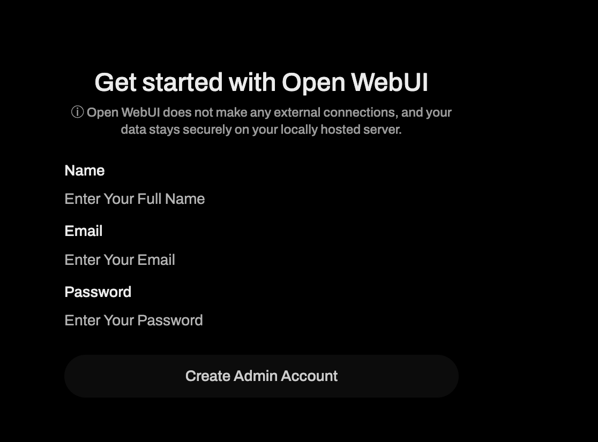
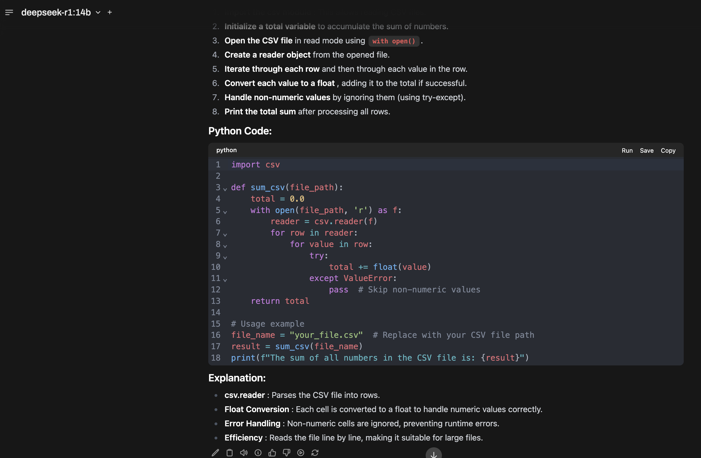
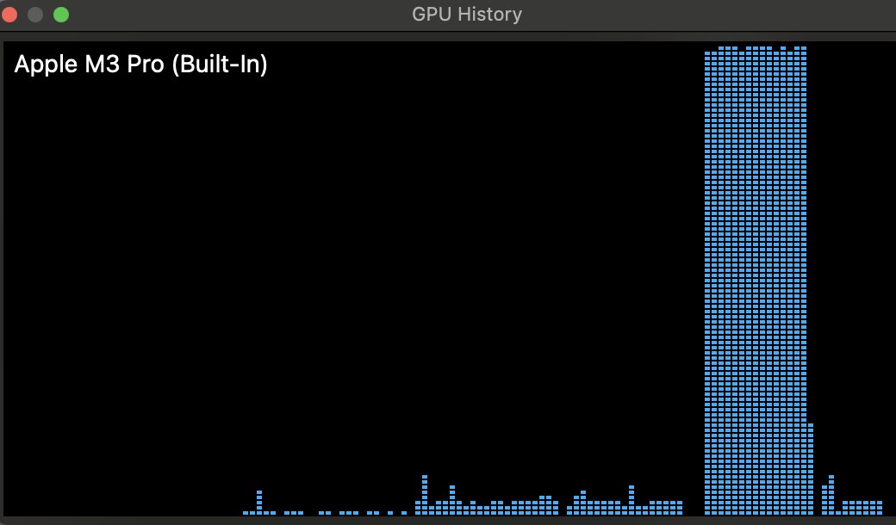

Setup local chat server: Deepseek and Ollama
In this page, we will do following. Please feel free to jump to the section of your choice.
System Info
The setup is being performed on Apple Metal 3 Pro Macbook machine with 36GB memory. At the time of commencing this installation, I still have about 320GB of storage left.
Installing Ollama
Ollama installation is a very straightforward process.
-
Ollama installer can be downloaded from the offical site for macbook at: https://ollama.com/download/mac.
- Once downloaded, extract the executable and double click on it to perfrom the installation. The installation should finish in no time.
Verify Installation
- Once Ollama is installed, you can go to the terminal of choice, and type in Ollama. This should show the help messages that are associated with Ollama.
-
Ollama also exposes port 11434 by default. Any curl message to that port in localhost should show Ollama is running message if the installation is successful.
% curl localhost:11434 Ollama is running%
Model Download
A list of model that is supported by Ollama can be found at this link.
Since Deepseek R1 is most capable of these, and is available for free to download, we will attempt to download R1. Considering the hardware limits of a personal computer, we will attempt to play around with 14B parameter model.s
The model can be pulled into the local machine to be used with Ollama by doing following:
% ollama pull deepseek-r1:14b pulling manifest pulling 6e9f90f02bb3... 100% ▕██ 9.0 GB pulling 369ca498f347... 100% ▕██▏ 387 B pulling 6e4c38e1172f... 100% ▕██▏ 1.1 KB pulling f4d24e9138dd... 100% ▕██▏ 148 B pulling 3c24b0c80794... 100% ▕██▏ 488 B verifying sha256 digest writing manifest success
The downloaded model is saved locally at ~/.ollama/models
If you have multiple models downloaded, you can list them using following command:
% ollama list NAME ID SIZE MODIFIED deepseek-r1:14b ea35dfe18182 9.0 GB 7 minutes ago
Asking Questions
Using Terminal Access: Chat Server
Of the many ways that we can use Ollama to talk to a LLM model, we will first see the most straightforward method. Here, we will use Ollama to load the model, and talk to it through terminal.
You can start this process by simply running following in your terminal.
prawarpoudel@Mac ~ % ollama run deepseek-r1:14b >>> Send a message (/? for help)
Upon which you can send message and talk to it just like any LLM service available.Following is an example of me talking to the Deepseek R1 model that I just instantiated.
>>> Can you interpret a dream? Why do we dream when we sleep? Please limit your answer to within 150 words. ;think; Alright, I need to answer the user's query about whether I can interpret dreams and why people dream during sleep, keeping it under 150 words. First, from our previous conversation, I know that REM sleep is linked with vivid dreaming. The user seems interested in both the interpretation of dreams and their purpose. I should confirm that while I can provide interpretations based on common symbols and theories, there's no definitive method for interpreting dreams scientifically. Also, I should briefly explain why we dream, touching on REM sleep's role in processing emotions, memories, and possibly aiding problem-solving. I need to make it concise, so I'll focus on the key points: no scientific consensus on interpretation methods and the purposes of REM sleep. ;think; While there is no definitive method for scientifically interpreting all dreams, many people use symbolic meanings or personal associations to gain insights. Dreams often reflect emotions, experiences, or thoughts from waking life. Why we dream during sleep remains unclear, but REM (Rapid Eye Movement) sleep, when most vivid dreaming occurs, may help process emotions, consolidate memories, and aid problem-solving. However, the exact purpose of dreams is still debated.
To quit:
Use Ctrl + d or /bye to exit. >>> /bye
Using CURL
Curl requests can be useful when designing an agent for completing other tasks with the help of LLM models. To send a CURL request, we first need to condition our request that we will see below:
- URI: http://localhost:11434/api/generate
- Header: "Content-Type: application/json"
- model: deepseek-r1:14b
- prompt: Can you interpret a dream? Why do we dream when we sleep? Please limit your answer to within 150 words
Finally, putting it all together.
% curl -X POST http://localhost:11434/api/generate -H "Content-Type: application/json" -d '{"model":"deepseek-r1:14b","prompt":"Can you interpret a dream? Why do we dream when we sleep? Please limit your answer to within 150 words","stream":false}'
The response to which is following:{"model":"deepseek-r1:14b","created_at":"2025-02-02T22:13:31.237735Z", "response":"\u003cthink\u003e\nOkay, xxxx \n\u003c/think\u003e\n\nDreams occur during xxx significance.","done":true,"done_reason":"stop","context":[...], "total_duration":27204042750,"load_duration":571147333,"prompt_eval_count":28, "prompt_eval_duration":465000000,"eval_count":368,"eval_duration":26166000000}%
The response field in the above response is the answer we are looking for. There are think delimiters as part of response as well, so duing AI agents desigh, these can be use appropriately.
The reason for supplying stream: false in the CURL request is to not allow streaming output. Otherwise, the response would be streaming, and each token in the output is sent as a separate response with an additional field done.
Using UI Similar to OpenAI ChatGPT UI
OpenWebUI project provides a UI that is similar to all state of the art chat LLM projects. Installing openWebUI allows us to have a local set up that is similar to the commercial projects.
To install open web UI, I am following the instructions at the official link.
Following are the exact steps that I took:
- Make sure that you have docker installed in your machine.
- Following command to run the image: docker run -d -p 3000:8080 -v open-webui:/app/backend/data --name open-webui ghcr.io/open-webui/open-webui:main
- Once the image is downloaded and the process starts to run, you can access it via localhost:3000 in your browser.
-
The first page that loads in your browser is the Getting Started Page. You will be asked to enter your email and password; which they claim to be save locally.
 - Once we provide the username, email and password to create an admin account; it should automatically, take us to the webpage with chat set up. Since we only have single LLM model with ollama, it auto detects and loads that model.
Chat with UI
Now we can start to chat with the set up that we just made. Following shows a snippet of the chat that I did in my local setup, where I had asked can you write a python code to find the sum of all the numbers in a csv file. 
Using Python Library
We can use python library ollama to talk to the local installation of the ollama and the model that we downloaded. Following is an example.
import ollama prompt = f"Can you interpret a dream? Why do we dream when we sleep? Please limit your answer to within 150 words." model = "deepseek-r1:14b" response = ollama.generate(model=model,prompt=prompt) print(response['response'])
Hardware Usage:
During the answering of question, following is the display in the GPU History window in the Activity Monitor of Macbook.
